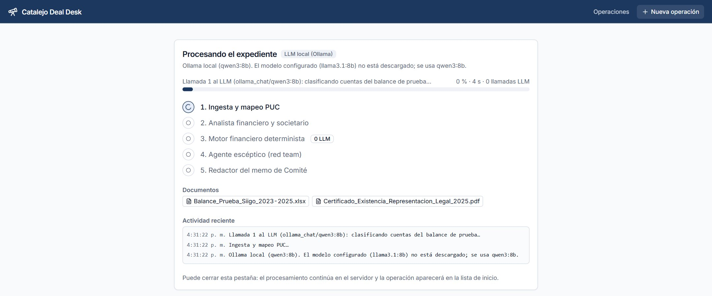
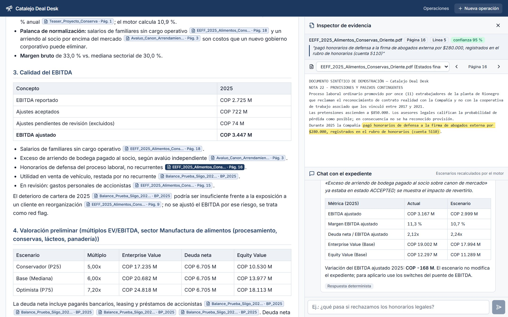
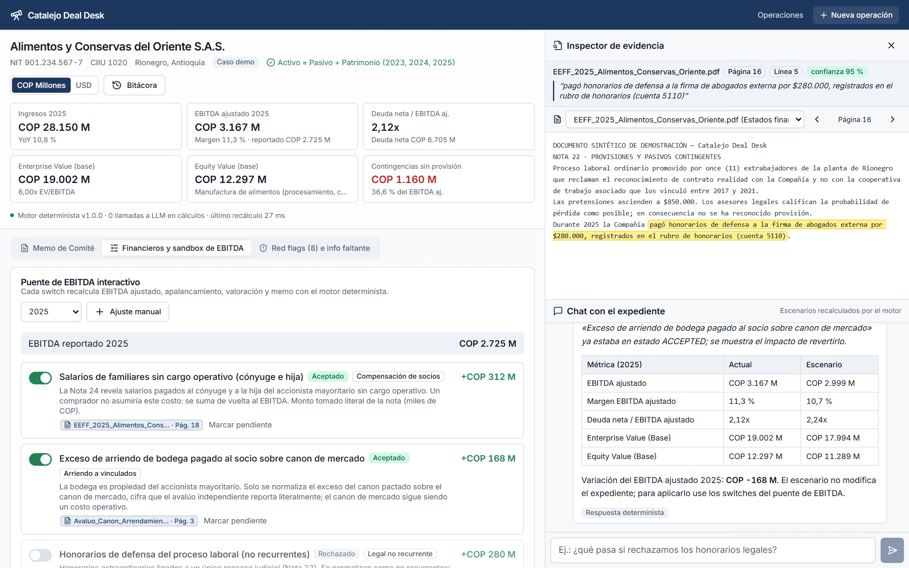
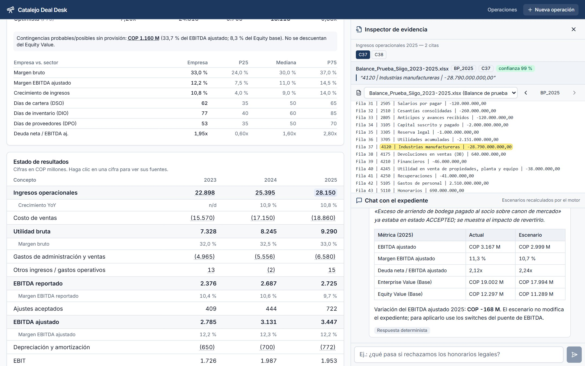
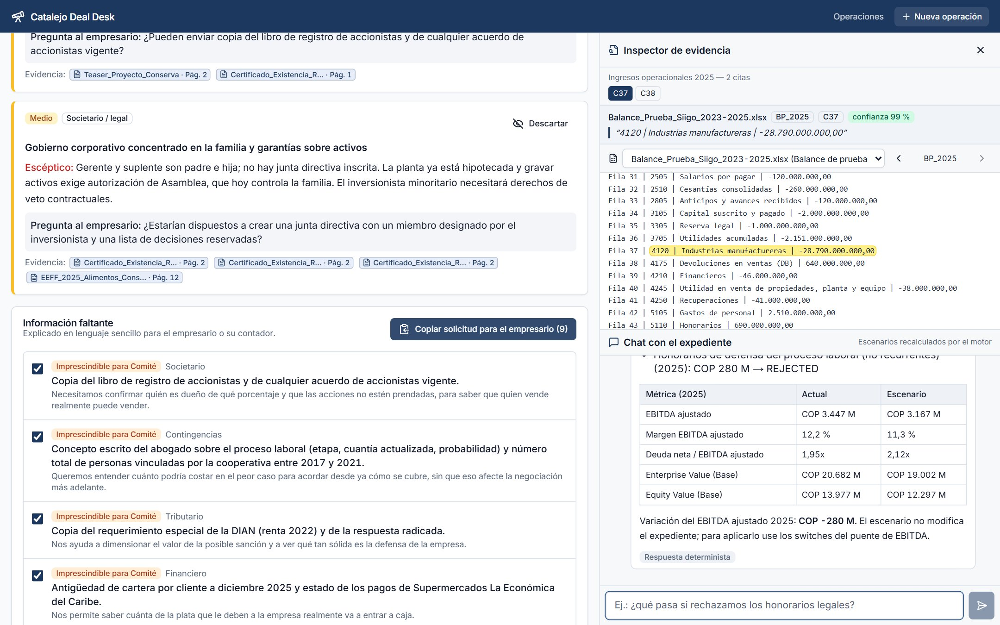
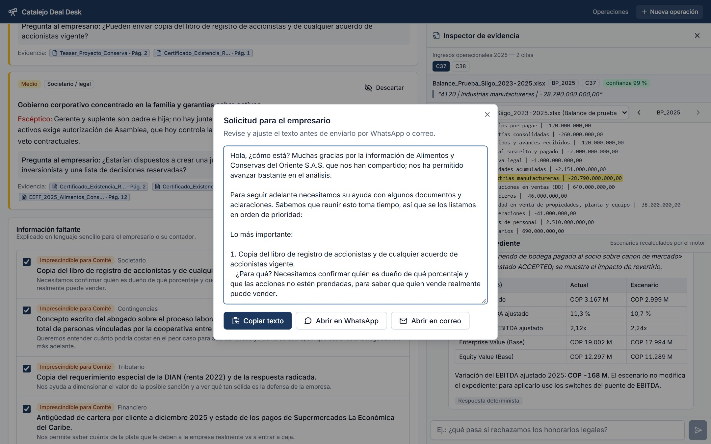
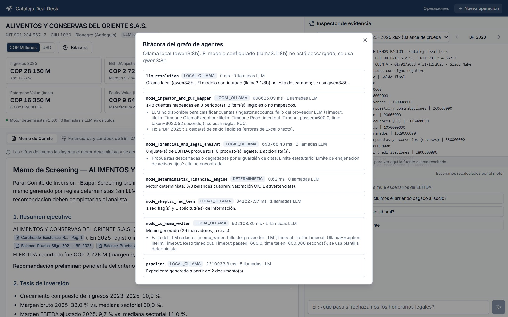

Informe de avance del prototipo y primera validación con usuario externo
Plataforma AI-first de screening financiero y due diligence preliminar para Private Equity lower-middle-market en Colombia
En una frase: el analista carga los documentos desordenados de una empresa mediana (estados financieros, balance de prueba de Siigo / World Office, certificado de Cámara de Comercio, teaser) y en minutos obtiene un expediente de inversión estandarizado donde cada cifra está citada a su documento fuente y toda la aritmética la hace un motor determinista, no el LLM.
MVP funcional de extremo a extremo (backend + frontend) ejecutándose en local
1. Resumen
Construimos un MVP funcional que cubre el flujo completo: carga de documentos → lectura y normalización contable → análisis por un grafo de cinco agentes → expediente interactivo con memo de Comité, sandbox de EBITDA, red flags e inspector de evidencia. El prototipo corre en local con un caso demo realista precargado (una empresa sintética de alimentos de ~COP 28.000 millones de ventas) y también procesa archivos reales PDF, Excel y CSV.
5agentes en el grafo (LangGraph), 1 de ellos 100 % determinista
159pruebas automáticas del backend, todas en verde
27–75 msrecálculo completo al activar/desactivar un ajuste
189citas literales verificadas en el caso demo
resumen de la validación en 2–3 líneas: quién probó, si completó la tarea y el hallazgo más importante.
2. Avances del prototipo
2.1 Principios de diseño (por qué está construido así)
Cero cifras sin fuente. Toda cifra, ajuste o alerta lleva una cita (documento, página u hoja, celda o línea, texto literal). Si no hay fuente se marca MISSING_DATA; nunca se inventa.
El LLM no hace aritmética. Los agentes solo clasifican cuentas, extraen texto y proponen ajustes. Márgenes, crecimientos, deuda neta, capital de trabajo y valoración los calcula un módulo Python determinista que además valida Activo = Pasivo + Patrimonio.
Humano en el circuito. El analista acepta o rechaza cada ajuste y cada red flag; todo se recalcula al instante sin volver a llamar al LLM.
Confidencialidad. Cada operación corre aislada. Se puede elegir un LLM en la nube o uno local (Ollama); si se pide local y no está disponible, el documento nunca se envía a la nube.
2.2 Arquitectura
DocumentosEEFF y notas (PDF), balance de prueba Siigo/World Office (XLSX/CSV), Cámara de Comercio, teaser, avalúos
Parser deterministaTexto con coordenadas, filas de Excel, detección de balances de prueba y cuentas hoja
→
1. Ingesta y mapeo PUCReglas PUC + revisión LLM de cuentas ambiguas
2. Analista financiero y societarioAjustes de EBITDA, accionistas, litigios
3. Motor financieroCálculos, cuadre contable, valoración P25/mediana/P75 — 0 LLM
4. Escéptico (red team)Red flags e información faltante
5. Redactor del memoMemo con marcadores que llena el motor
→
Guardián de citasDescarta toda afirmación del LLM cuya cita no aparezca literalmente en el documento
Expediente interactivoMemo, sandbox de EBITDA, red flags, inspector de evidencia, chat
determinista agente LLM (nube u Ollama local; si no hay LLM, cae a reglas)
Nueva operación. Caso demo en 1 clic o carga de documentos propios (arrastrar y soltar). El selector muestra si el LLM en la nube o el local están realmente disponibles; aquí no hay API key, así que se avisa que se procesará con reglas.

Procesamiento en segundo plano. La carga responde al instante y el grafo de agentes corre en el servidor; la pantalla muestra el paso actual, cada llamada al LLM y el tiempo transcurrido. Captura real de un procesamiento con el modelo local qwen3:8b.

Workspace 60/40 — Memo de Comité. Cada cifra del memo trae su cita (los recuadros grises). Al hacer clic, el panel derecho abre el documento en la página exacta con el texto resaltado (aquí, la nota 22 sobre honorarios legales). Abajo, el chat con el expediente.

Sandbox de EBITDA. Cada ajuste propuesto (sueldos de familiares, arriendo al socio sobre el canon de mercado, honorarios no recurrentes…) tiene su cita y un switch. Al rechazar los honorarios legales, el motor recalcula en 27 ms: EBITDA ajustado de COP 3.447 M a 3.167 M, deuda neta/EBITDA de 1,95x a 2,12x y Enterprise Value base de COP 20.682 M a 19.002 M.

Valoración y trazabilidad de cifras. Valoración por múltiplos EV/EBITDA sectoriales (P25 / mediana / P75) y comparación de la empresa contra el sector. Al hacer clic en una cifra de las tablas (ingresos 2025), el inspector muestra las filas exactas del balance de prueba de las que sale.

Red flags e información faltante + chat. El agente escéptico ataca la tesis (contingencias sin provisión, cartera, covenant, préstamos a socios…) con evidencia citada y una pregunta concreta para el empresario. En el chat, "¿qué pasa si rechazamos los honorarios legales?" se responde con una tabla antes/después calculada por el motor.

Solicitud al empresario. Convierte la información faltante en un mensaje en español sencillo, listo para WhatsApp o correo.

Bitácora del grafo. Registro auditable de cada agente: modo, duración, llamadas al LLM y propuestas descartadas por el guardián de citas.
2.4 Estado de las funcionalidades
Funcionalidad
Estado
Comentario
Caso demo realista en 1 clic
Funciona
6 documentos sintéticos, 153 cuentas, 189 citas.
Carga de PDF, XLSX y CSV
Funciona
Validación inmediata; formatos no soportados se rechazan con un mensaje claro.
Lectura de balances de Siigo / World Office
Funciona
Detecta saldos crédito negativos, balances pre-cierre y niveles agregados del PUC para no sumar dos veces.
Motor financiero determinista
Funciona
Márgenes, YoY/CAGR, puente de EBITDA, capital de trabajo, deuda neta, cuadre contable, valoración y contingencias.
Sandbox de EBITDA y ajustes manuales
Funciona
Recálculo en 27–75 ms medido en la interfaz.
Memo con citas e inspector de evidencia
Funciona
El memo se actualiza solo al cambiar ajustes.
Red flags, información faltante y mensaje al empresario
Funciona
Descartar / reactivar red flags; mensaje para WhatsApp o correo.
Chat con escenarios
Funciona
Sin LLM responde con un enrutador determinista; con LLM, el motor recalcula los escenarios que propone.
Procesamiento asíncrono con progreso
Funciona
Sobrevive al cierre de la pestaña; si el servidor se reinicia, el proceso se marca como interrumpido.
Modo sin API key (solo reglas)
Funciona
Extrae cifras, identidad de la empresa y red flags por reglas; no propone ajustes de EBITDA.
Agentes LLM en la nube (Claude / Gemini / OpenAI)
Parcial
Implementados y probados con un LLM simulado; falta probarlos con una API key real.
LLM local (Ollama)
Parcial
Funciona de extremo a extremo, pero con qwen3:8b en este equipo tomó 37 min y 2 de 5 llamadas expiraron (el sistema siguió con reglas).
Benchmarks sectoriales por CIIU
Parcial
Valores referenciales, no oficiales; falta recalibrarlos con datos del PIE de Supersociedades y transacciones comparables.
Excel adicionales (aging de cartera, ventas por cliente)
En construcción
Hoy solo se ven en el inspector; el LLM aún no los lee.
OCR de PDF escaneados
En construcción
Se detectan y se marcan como ilegibles.
Usuarios, permisos y despliegue en la nube
En construcción
El MVP corre en local con SQLite.
Exportar el memo a PDF / Word
En construcción
—
2.5 Dificultades encontradas
Dificultad
Cómo la abordamos
Los LLM inventan citas o cifras
Guardián de citas: toda cita propuesta se busca literalmente en el documento; si no aparece, se descarta. Si el monto de un ajuste no está en su cita, el ajuste queda "pendiente de revisión".
Los LLM se equivocan en aritmética
El LLM nunca calcula: escribe marcadores (ej. {{metric:ebitda_adjusted:2025}}) que el motor llena. Incluso las conversiones de unidades (miles → COP) se hacen en código.
Formatos contables reales "desordenados"
Los balances de Siigo traen saldos crédito en negativo, niveles agregados (1, 11, 1105…) y son pre-cierre. Se resolvieron con reglas PUC y validación de la ecuación contable.
LLM local muy lento
Con qwen3:8b una llamada mínima tardó 113 s y el flujo completo 37 min. Respuesta: procesamiento en segundo plano con progreso, enviar al LLM solo las cuentas ambiguas y timeout propio para Ollama.
Sin datos oficiales de múltiplos
Supersociedades publica estados financieros, no múltiplos. Usamos valores referenciales marcados como "no oficiales" y documentamos cómo recalibrarlos.
3. Primera validación con un usuario externo
Evaluador: empresario del sector de consultoría con experiencia en procesos de M&A, externo al equipo.
nombre o iniciales (o "anónimo"), cargo, años de experiencia y relación con el equipo.
3.1 Tarea asignada
la consigna exacta que le dieron. Sugerencia de redacción si fue así: "Usted es analista de un fondo y recibió los documentos de Alimentos y Conservas del Oriente. Abra el caso, revise el memo, verifique de dónde sale al menos una cifra, decida si acepta o rechaza los ajustes al EBITDA y prepare la solicitud de información para el empresario."
3.2 Resultados
Aspecto
Resultado
Flujo evaluado
qué funcionalidad probaron (p. ej. caso demo → memo → inspector de evidencia → sandbox de EBITDA → red flags → solicitud al empresario; ¿probó también la carga de archivos o el chat?).
Metodología
presencial o remota, fecha, duración, quién observó y quién tomó notas, si se le pidió pensar en voz alta, si se grabó, y si se le explicó algo antes de empezar.
Resultado
¿completó la tarea sin ayuda? ¿cuánto tardó? ¿en qué pasos necesitó ayuda?
Dificultades
errores, dudas o confusiones observadas (dónde se detuvo, qué no encontró, qué malinterpretó).
Feedback
comentarios del evaluador, idealmente citas textuales; qué le pareció útil, qué no, qué le faltó desde su experiencia en M&A.
Aprendizajes
qué cambiaríamos a partir de la prueba.
3.3 Evidencias
fotos o capturas de la sesión, grabación (enlace) o notas escaneadas. Si no hubo, indicarlo.
4. Aprendizajes y próximos pasos
4.1 Aprendizajes del desarrollo
La confianza del analista depende de poder verificar cada cifra en un clic; por eso la trazabilidad es el núcleo del producto y no un adorno.
Separar "el LLM lee y propone" de "el código calcula" elimina una clase entera de errores y hace el resultado auditable.
Un LLM local es viable para la confidencialidad, pero no con hardware modesto: hay que reducir lo que se le envía y procesar en segundo plano.
aprendizajes que salieron de la validación con el empresario.
4.2 Próximos pasos
Probar los agentes con un LLM en la nube real (API key) sobre el caso demo y sobre documentos de una empresa real anonimizada.
Recalibrar los benchmarks por CIIU con datos del PIE de Supersociedades y transacciones comparables.
Leer con el LLM los Excel que no son balances (aging de cartera, ventas por cliente) y avisar cuando un documento se recorta por tamaño.
Exportar el memo de Comité a PDF / Word y agregar usuarios y despliegue en la nube.
Repetir la validación con 2–3 analistas de fondos o bancas de inversión boutique.
próximos pasos derivados del feedback del evaluador (y ordenar la lista por prioridad).
Anexo. Cómo ejecutar el prototipo
Desde la raíz del repositorio, en Windows: powershell -ExecutionPolicy Bypass -File .\dev.ps1 (en macOS / Linux: ./dev.sh). Luego abrir http://localhost:3000 → Nueva operación → Abrir caso demo en 1 clic. Pruebas automáticas: .venv\Scripts\python -m pytest desde backend.
Todos los documentos, personas y cifras del caso demo son sintéticos y fueron creados para la demostración.